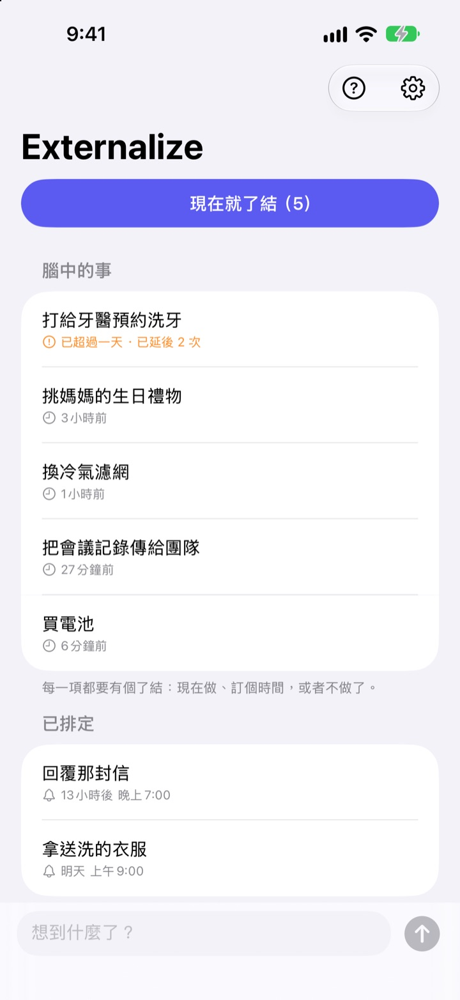
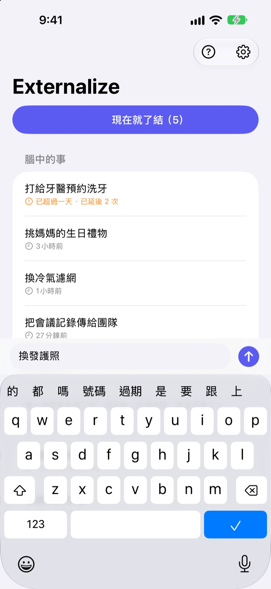
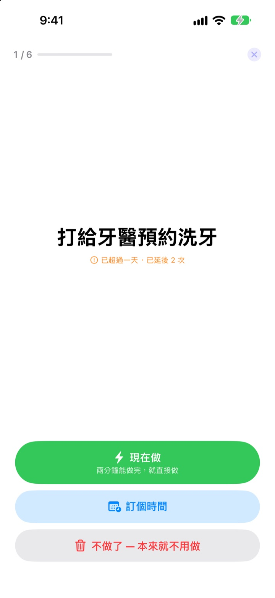
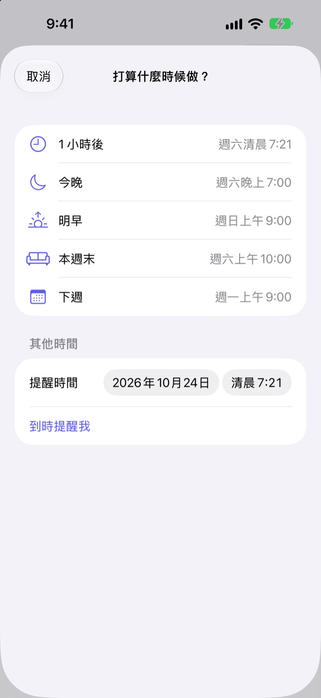

想到就記下，
晚上再了結
「啊對了，我得……」想到的那一刻寫幾個字，把它從腦中放下。晚上只要把剩下的事逐項了結就好。
所有功能都免費，不用註冊也不用登入。

馬上試試看
寫下腦中的一件事，或點一下範例。接著點「現在就了結」，逐項給它們一個結果。
再小的事，也會佔著腦袋
洗澡時、等紅燈時、快睡著時，「那件事還沒做」突然冒出來。手邊沒地方記，只好一直記掛著，手上的事也跟著分心。待辦 App 又要先建清單、訂截止日，連記一筆都變成負擔。
3 秒記下，然後忘掉
打開 App，直接在畫面底部的輸入列裡寫。不用選清單、資料夾，也不用訂截止日。
點一下鎖定畫面小工具，就會打開一行空白輸入列。對 Siri 說 在Externalize中記一下，或設定到動作按鈕，不打開 App 也能記下。

晚上逐項了結
還有沒處理的事，晚上 9 點提醒你一次。全部處理完就不打擾。
開始了結後，事項會一條一條放大顯示。選「現在做」「訂個時間」或「不做了」，就換下一條。兩分鐘做得完的事，開個計時器馬上搞定。

不會越堆越多
訂時間時可以選「1 小時後」「今晚」「明早」「本週末」或「下週」，時間到再提醒你。在通知裡就能直接選「完成」「明早」或「不做了」。
放超過一天的事和一拖再拖的事都會被標出來，一直往後延的事一眼就看得到。

三步驟開始
- 1
想到就記
在 App、鎖定畫面小工具或 Siri，哪個順手用哪個，寫幾個字就好。
- 2
允許通知
第一次記下事項時會問一次，用於晚間提醒和你訂好的時間。
- 3
晚上了結
點開提醒或「現在就了結」，給每一項一個結果。
在列表裡直接處理
- 點一下事項
- 選擇「完成」「訂個時間」或「不做了」
- 向右滑動
- 完成（從列表中移除）
- 向左滑動
- 不做了，或用「稍後」訂個時間
- 現在就了結
- 把剩下的事一條一條過一遍
- 在Externalize中記一下
- 對 Siri 說，不必打開 App
- 設定 ▸ 晚間提醒
- 更改提醒時間或關閉
訂時間時，「今晚」是晚上 7 點，「明早」是早上 9 點，「本週末」是週六上午 10 點，「下週」是週一上午 9 點。也可以自己選任何日期和時間。
常見問題
不打開 App 也能記嗎？
可以。對 Siri 說 在Externalize中記一下，它會問你要記什麼，然後直接儲存。在「設定」的動作按鈕指定「記下來」捷徑，按一下就能記。
怎麼加入鎖定畫面小工具？
長按鎖定畫面，點「自訂」並選擇鎖定畫面，點小工具區域後加入 Externalize。點一下會打開一行空白輸入列，也能看到還剩幾項。主畫面上也能放小尺寸小工具。
想更改或關閉晚間提醒。
點右上角的齒輪 ▸ 晚間提醒，就能更改時間或關閉。預設是晚上 9 點，沒有剩餘事項的日子不會提醒。
收不到通知。
如果 Externalize 的設定顯示通知已關閉，點那裡的按鈕，到 iPhone 設定中開啟通知。沒有剩餘事項的日子本來就不會有晚間提醒。
訂了時間的事會怎麼回來？
到了你訂的時間會收到通知。長按通知就能直接選「完成」「明早」或「不做了」。什麼都不選的話，它會回到「腦中的事」，下次了結時再處理。
按了「完成」或「不做了」的事還能找回嗎？
不能。了結的事會從列表中移除，也沒有封存。還不確定的話，先選「訂個時間」，別急著丟掉。
換手機後內容會跟著走嗎？
不會。內容只儲存在這台裝置上，不會上傳到 iCloud 或伺服器。刪除 App 時也會一併刪除。
支援哪些裝置？
執行 iOS 17 或以上版本的 iPhone。
有問題或發現錯誤，請寄信到 mizzking75@gmail.com。附上 iPhone 型號和 iOS 版本，能幫我們更快找出原因。